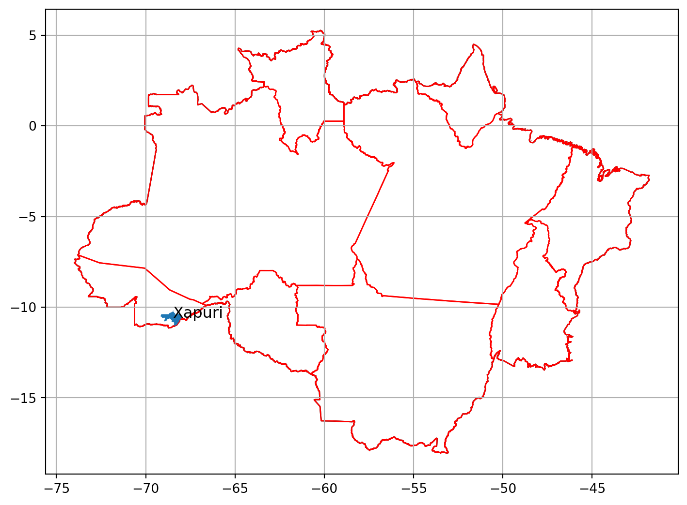
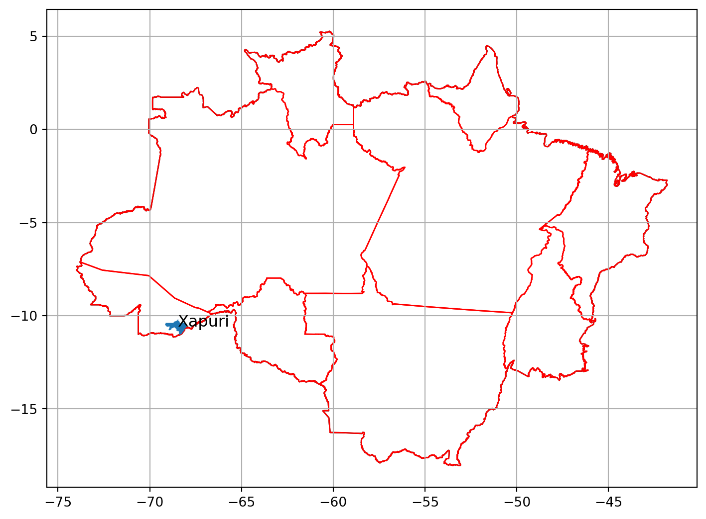
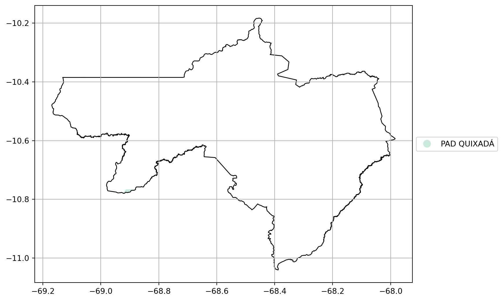
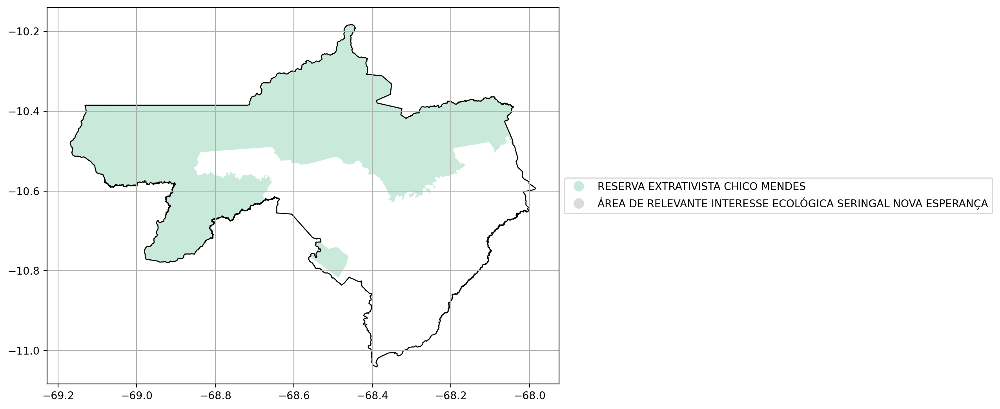
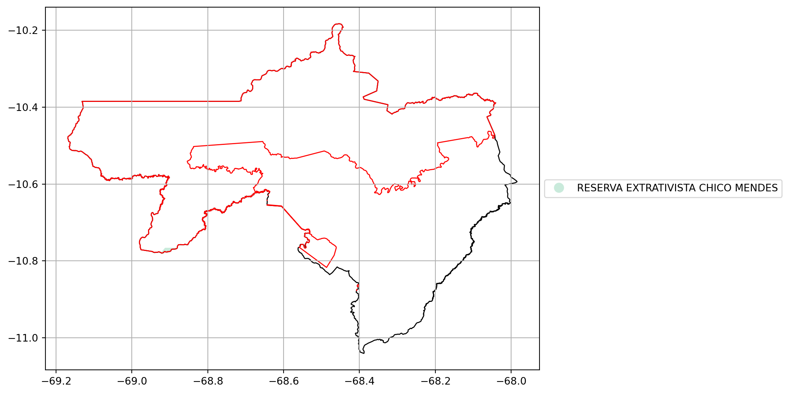

| Estado | UF | Código do Município | Nome do Município | Área do Município (km²) |
|---|---|---|---|---|
| Acre | AC | 1200708 | Xapuri | 5350.5860 |

| Estado | UF | Código do Município | Nome do Município | Área do Município (km²) |
|---|---|---|---|---|
| Acre | AC | 1200708 | Xapuri | 5350.5860 |

| Nome da Gleba Federal | Área (km²) |
|---|---|
| PAD QUIXADÁ | 3.5109 |
3,51 km²
0,07 %

| Nome da Unidade de Conservação | Área (km²) |
|---|---|
| RESERVA EXTRATIVISTA CHICO MENDES | 3084.3249 |
| ÁREA DE RELEVANTE INTERESSE ECOLÓGICA SERINGAL NOVA ESPERANÇA | 0.2399 |
3.084,56 km²
57,65 %
/home/obt/.local/lib/python3.10/site-packages/geopandas/plotting.py:693: UserWarning:
The GeoDataFrame you are attempting to plot is empty. Nothing has been displayed.
ValueError: cannot convert float NaN to integer<Figure size 864x624 with 1 Axes>| Nome da Terra Indígena | Área (km²) |
|---|
0,00 km²
0,00 %

| Nome da Unidade de Conservação | Área (km²) |
|---|---|
| RESERVA EXTRATIVISTA CHICO MENDES | 3.3873 |
'3.39 km²'/home/obt/.local/lib/python3.10/site-packages/geopandas/plotting.py:693: UserWarning:
The GeoDataFrame you are attempting to plot is empty. Nothing has been displayed.
ValueError: cannot convert float NaN to integer<Figure size 864x624 with 1 Axes>| Nome da Terra Indígena | Área (km²) |
|---|
'0.0 km²'